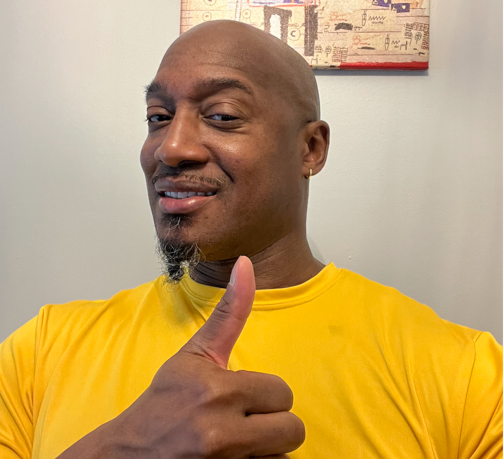

My Resume

Summary
Results-driven and skilled Army Veteran turned software developer, with a strong foundation
in HTML, CSS, JavaScript, Pythong, and C#. Adept at designing, implementing, testing, and
maintaining complex software solutions. Proven ability as a SCRUM Master to collaborate with
cross-functional teams, to deliver high-quality code within project deadlines. Detail-oriented
and committed to continuous learning and improvement.
Education
Section 1
- Undergraduate Certification in Programming Essentials- Devry University, Nashville, TN
March 2023 - February 2024
- Bachelor of Science in Biology- St. Francis College, Brooklyn, Ny 11223,
September 2020 - January 2023
- US Army Basic Training - February 2007- November 2007
Skills
Section 1
- Programming Languages: Python, C#, JavaScript
- SCRUM
- Web Development: HTML, CSS, Flask, Django, ASP.NET
- Database Management: MySQL, PostgreSQL, MongoDB
- Version Control: Git
- Tools: Visual Studio, Git, Azure
- Other Technologies: RESTful API's, JSON, XML, Arduino IDE, Tinkercad
- Army Sergeant: Radio Retransmission Operator
Certifications
Section 1
- Python Developer
- Certified SCRUM Master (CSM)
- Microsoft Azure Developer Associate
- Amazon Code Whiperer